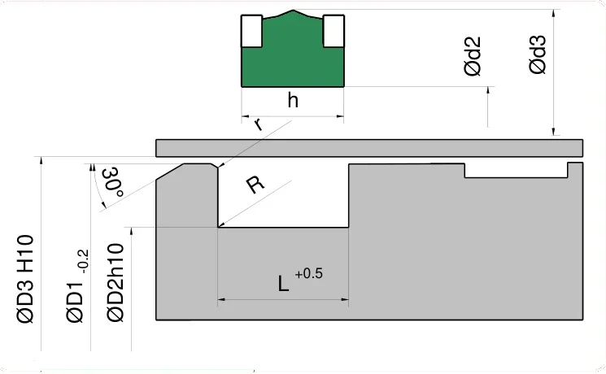

Uszczelnienie tłoka
DZ
Uszczelnienie DZ-Usmt jest elementem uszczelniającym jednokomponentowym, dwustronnego działania, zabudowa na tłok stały. Wysokociśnieniowa uszczelka wykonana z materiałów termoplastycznych. Stosowana głównie w siłownikach górniczych, a typoszereg standardowy także w hydraulice innych gałęzi przemysłu.
Zamawianie: d1 x d2 x h, np. DZ 210 x 190 x 15
Parametry pracy
- Ciśnienie
- 500 bar / 50 MPa
- Temperatura pracy
- -30 ÷ +90 °C
- Prędkość ruchu
- do 0,5 m/s
- Medium
- oleje mineralne; emulsje olejowo-wodne HFA, HFB, HFC; wodny roztwór glikolu etylowego, np. Polikon Test
Konstrukcja
- Część uszczelniająca
- TPU-92 Shore A
- Pierścień przeciwwyciskowy
- POM
- Cechy
- wysoka odporność na ścieranie; poliacetalowe pierścienie zabezpieczające przed wyciskaniem
Typoszereg DZ
Tolerancje gniazda: ØD3 H10, ØD2 h10, ØD1 -0,2, L +0,5, faza 30°.
Do montażu zalecana jest faza montażowa min. 15°, maks. 30°, o szerokości około 10 mm.
Pozostałe wymiary na zapytanie.
13 rozmiarów w typoszeregu
Tabelę można przesuwać w bok. Kolumna z oznaczeniem zostaje na miejscu.
| Oznaczenie | Uszczelka | Gniazdo (zabudowa) | |||||||
|---|---|---|---|---|---|---|---|---|---|
| d1średnica zewnętrzna | d2średnica wewnętrzna | hszerokość uszczelki | D1średnica zewnętrzna | D2średnica wewnętrzna | D3średnica cylindra | Lszerokość gniazda | Rpromień wewnętrzny | rpromień zewnętrzny | |
| DZ 90 x 80 x 8 | 90 | 80 | 8 | 89 | 80 | 120 | 9 | 0,5 | 0,2 |
| DZ 120 x 102 x 15 | 120 | 102 | 15 | 119 | 102 | 120 | 16 | 0,5 | 0,2 |
| DZ 120 x 105 x 12 | 120 | 105 | 12 | 119 | 105 | 120 | 13 | 0,5 | 0,2 |
| DZ 120 x 105 x 15 | 120 | 105 | 15 | 119 | 105 | 120 | 16 | 0,5 | 0,2 |
| DZ 125 x 110 x 15 | 125 | 110 | 15 | 124 | 110 | 120 | 16 | 0,5 | 0,2 |
| DZ 135 x 120 x 15 | 135 | 120 | 15 | 134 | 120 | 135 | 16 | 0,5 | 0,2 |
| DZ 160 x 145 x 15 | 160 | 145 | 15 | 159 | 145 | 160 | 16 | 0,5 | 0,2 |
| DZ 161,2 x 145 x 15 | 161,2 | 145 | 15 | 160 | 145 | 161,2 | 16 | 0,5 | 0,2 |
| DZ 162,5 x 145 x 15 | 162,5 | 145 | 15 | 161,5 | 145 | 162,5 | 16 | 0,5 | 0,2 |
| DZ 200 x 180 x 15 | 200 | 180 | 15 | 199 | 180 | 200 | 16 | 0,5 | 0,2 |
| DZ 210 x 190 x 15 | 210 | 190 | 15 | 209 | 190 | 210 | 16 | 0,5 | 0,2 |
| DZ 211,2 x 190 x 15 | 211,2 | 190 | 15 | 210 | 190 | 211,2 | 16 | 0,5 | 0,2 |
| DZ 212,5 x 190 x 15 | 212,5 | 190 | 15 | 211,5 | 190 | 212,5 | 16 | 0,5 | 0,2 |
Tego rozmiaru nie ma w typoszeregu. Prosimy o zapytanie z wymiarami gniazda.
Wymiary w mm według karty katalogowej KT-DZ01, wartości w nawiasach jak w karcie. Typoszereg zostanie uzupełniony o kolejne rozmiary.